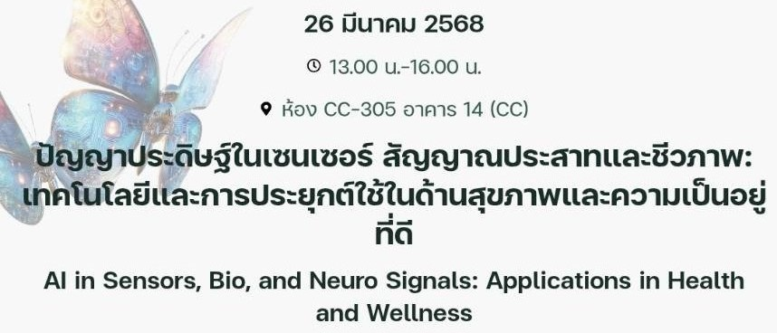
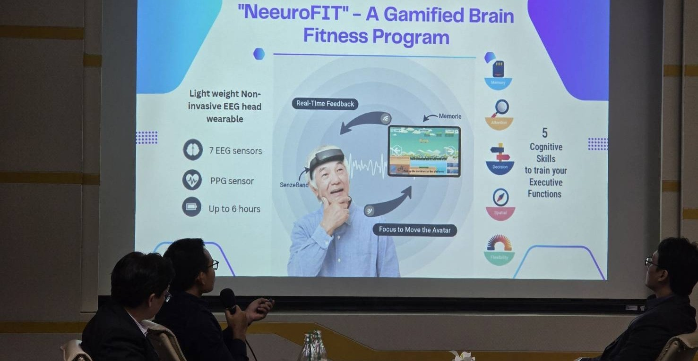
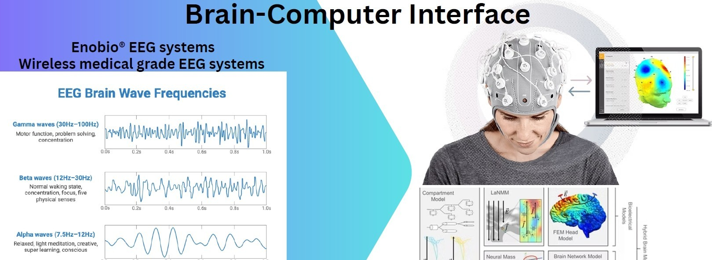
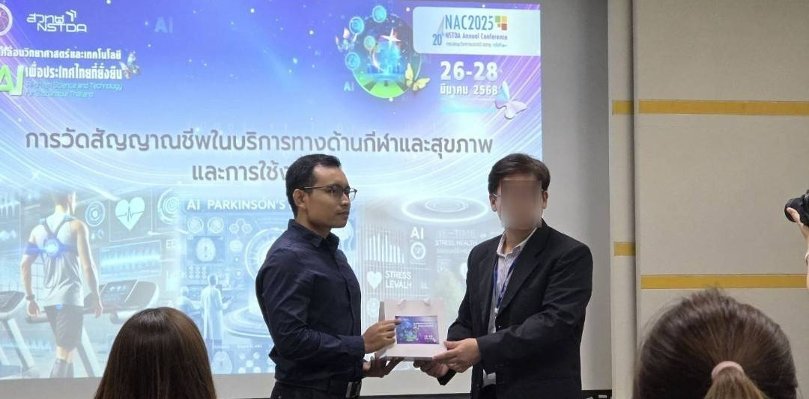

SPEAKER @ NSTDA ANNUAL CONFERENCE 2025
หัวข้อ:การวัดสัญญาณชีพในบริการด้านกีฬาและสุขภาพและการใช้งาน AI

งานประชุมวิชาการประจำปี สวทช. ครั้งที่ 20
สัมมนากึ่งวิชาการเพื่อแชร์ความรู้และประสบการณ์ในการให้บริการทางสุขภาพโดยระบบหรืออุปกรณ์ชั้นสูงที่มีการใช้ประโยชน์จาก AI ในการวิเคราะห์สัญญาณจากเซนเซอร์ สัญญาณชีวภาพและสัญญาณประสาท รวมถึงโอกาสที่น่าสนใจในอนาคต ผ่านมุมมองทั้งจากเอกชนผู้ให้บริการและนักวิจัย โดยมี theme อาทิ
การใช้ AI ในทางการแพทย์เพื่อทำนายระดับความรุนแรงของไข้เลือดออก
การบริหารสมองโดยใช้นิวโรฟีดแบค
Brain-Computer Interface สำหรับการฟื้นฟูระบบประสาทของผู้ป่วยโรคหลอดเลือดสมอง
AI กับสัญญาณชีพสำหรับการติดตามประสิทธิภาพด้านกีฬา
AI กับการคัดกรองโรคพาร์กินสัน
AI และการใช้งานเกี่ยวกับสุขภาพจิตและภาวะความเครียด

เสวนา: การวัดสัญญาณชีพในบริการทางด้านกีฬาและสุขภาพ และการใช้งาน AI ร่วมเสวนาโดย คุณพัชระ อัลอุมารี

เนื้อหาการบรรยาย การวัดสัญญาณชีพในบริการทางด้านกีฬาและสุขภาพ โดยมีการประยุกต์ AI ในการวิเคราะห์สัญญาณชีพและสัญญาณประสาท โดยมีการนำเสนอกรณีศึกษาที่น่าสนใจ เช่น การใช้ AI ในการวิเคราะห์สัญญาณชีพในนักกีฬา การใช้ AI ในการวิเคราะห์สัญญาณประสาทในผู้ป่วย
